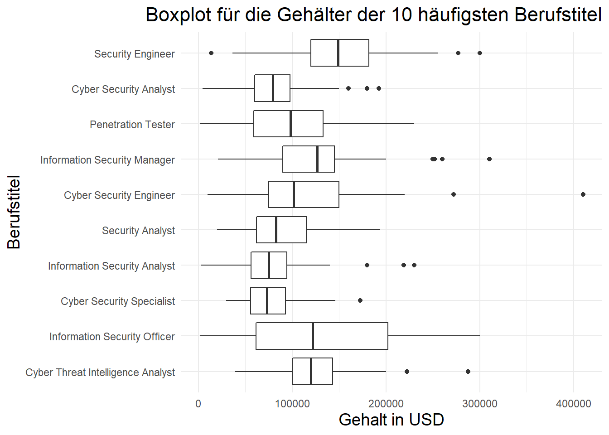
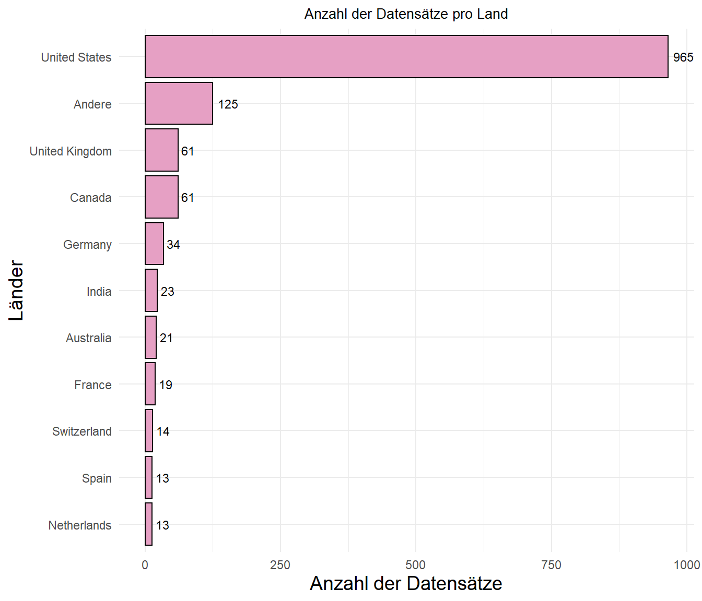

Untersuchung der Gehälter von Cyber-Security Experten
1. Formulierung der Fragestellung
Der vorligende Datensatz enthält Daten über die Jahresgehälter von verschiedenen Angeställten im Bereich Cyber-Security und werden unter folgendem Link https://www.kaggle.com/datasets/whenamancodes/infoseccyber-security-salaries bereitgestellt. Der Datensatz enthält folgende Informationen:
- Arbeitsjahr
- Jobtitel
- Erfahrungslevel
- Job Status
- Jahresgehalt in US-Dollar und anderen Währungen
- Wohnort des Mitarbeiters
- Betriebsstandort
- Betriebsgröße
- Remote Anteil an der Arbeit
1.1 Interesse an den Daten
Dadurch, dass immer mehr Prozesse in Unternehmen digitalisiert werden, steigt auch die Gefahr von Cyber-Angriffen. Um diese Gefahr abzuwehren, werden immer mehr Cyber-Security Experten benötigt. Diese Experten sind in der Lage, die Sicherheit von Unternehmen zu gewährleisten. In dieser Arbeit sollen dafür die Gehälter von verschiedenen Cyber-Security Bereichen untersucht werden, um einen Einblick in die Nachfrage von Cyber-Security Experten zu bekommen. Zudem können die Ergebnisse der Arbeit dazu genutzt werden, um die Gehälter von Cyber-Security Experten zu vergleichen und zu bewerten.
1.2 Fragestellung
Die übergeordnete Fragestellung liegt darin, herrauszufinden welche Faktoren von der Bezahlung eines Cyber-Security Experten abhängen. Dabei sind die einzelnen Faktoren miteinander zu vergleichen und mögliche Korrelationen aufzudecken.
Innerhalb des Cyber-Security Bereichs existieren zudem viele unterschiedliche Titel die auf den genaueren Einsatzbereich des Angestellen schließen können. Hier können möglicherweise einzelne Gruppen gebildet werden, die ebenfalls einen gewissen Einfluss auf das Gehalt eines Mitarbeiters haben.
Abgesehen davon könnte sich auch die Fragestellung ergeben, ob sich die Gehälter von Cyber-Security Experten über die Zeit verändert haben. Hierbei ist zu untersuchen, wo und durch welche Faktoren sich die Gehälter verändert haben.
1.3 Erwartete Ergebnisse
Folgende Erwartungen kamen in der ersten Auseinandersetzung mit dem Datensatz anhand persönlicher Überlegungen auf: * Starke Korrelation des Gehalts mit Erfahrungen * Bekannte/Größere Betriebe zahlen ihren Mitarbeitern mehr * Regionale unterschiede vergelichbar mit BIP * Remote Anteil an der Arbeit hat keinen Einfluss auf das Gehalt * Über die Zeit verdienen Cyber-Security Experten mehr Geld
Innerhalb des Projekts wird versucht Beweise für die aufgestellten Erwartungen zu sammeln, die dafür- oder dagensprechen können.
2. Laden der Daten und entdecken der Datenstruktur
In diesem Schritt werden die Daten geladen und genauer untersucht. Dabei werden die Daten auf mögliche Fehler überprüft und die Datenstruktur genauer betrachtet. Ziel ist es, wichtige Schritte zu definieren, die im nächsten Schritt für die Aufbereitung der Daten wichtig sind.
# Daten laden
data <- as_tibble(read_csv("data/Cyber_salaries.csv", show_col_types = FALSE))
data# A tibble: 1,349 × 11
work_year experience…¹ emplo…² job_t…³ salary salar…⁴ salar…⁵ emplo…⁶ remot…⁷
<dbl> <chr> <chr> <chr> <dbl> <chr> <dbl> <chr> <dbl>
1 2022 EN FT Inform… 68000 EUR 72762 DE 100
2 2022 SE FT Securi… 123400 USD 123400 US 0
3 2022 SE FT Securi… 88100 USD 88100 US 0
4 2022 SE FT Securi… 163575 USD 163575 US 100
5 2022 SE FT Securi… 115800 USD 115800 US 100
6 2022 MI FT Penetr… 40000 EUR 42801 CY 100
7 2022 SE FT Securi… 136600 USD 136600 US 100
8 2022 SE FT Securi… 109280 USD 109280 US 100
9 2022 SE FT Securi… 211600 USD 211600 US 100
10 2022 SE FT Securi… 182160 USD 182160 US 100
# … with 1,339 more rows, 2 more variables: company_location <chr>,
# company_size <chr>, and abbreviated variable names ¹experience_level,
# ²employment_type, ³job_title, ⁴salary_currency, ⁵salary_in_usd,
# ⁶employee_residence, ⁷remote_ratio2.1 Übersicht der Daten
Daraus folgt, dass die Daten erfolgreich importiert wurden und folgedne Datenstruktur aufweisen:
| Variable | Typ | Unique Values | Beschreibung |
|---|---|---|---|
| work_year | Integer | Zwischen 2020 und 2022 | Arbeitsjahr |
| experience_level | chr | EN, SE, MI, EX | Erfahrungslevel, wobei EN - Entry level / Junior, MI - Mid level / Intermediate, SE - Senior level / Expert, EX - Executive level / Director |
| employment_type | chr | FT, PT, CT, FL | Art der Anstellung, wobei PT - Part time, FT - Full time, CT - Contract, FL - Freelance |
| job_title | chr | Information Security Officer, Security Officer, Security Engineer, Penetration Testing Engineer, Security Analyst, Security Consultant, … | Jobtitel (hier nur die ersten 10 abgebildet) |
| salary | Integer | Zwischen 1740 und 5^{8} | Jahresgehalt |
| salary_currency | chr | EUR, USD, GBP, BRL, INR, CAD, CHF, DKK, SGD, AUD, SEK, MXN, ILS, PLN, NOK, IDR, NZD, HUF, ZAR, TWD, RUB | Währung |
| salary_in_usd | Integer | Zwischen 2000 und 8.9992^{5} | Jahresgehalt in USD |
| employee_residence | chr | DE, US, CY, BA, GB, CA, IN, FR, ES, BR, BW, TW, NL, AE, CH, DK, CL, SG, AU, IT, PK, GR, GH, AZ, RO, AR, DZ, AF, SI, HR, SE, HU, ET, MX, IL, IE, PL, CR, JP, PT, NG, NO, CZ, ID, EE, KG, KE, BG, IR, NZ, BE, ZA, AT, LU, EG, VN, SA, LT, RU, TR | Wohnort des Mitarbeiters nach Ländercode (ISO 3166) |
| remote_ratio | Integer | Zwischen 0 und 100 | Remote Anteil an der Arbeit 0 - Keine Remote Arbeit (weniger als 20%), 50 - Teilweise Remote, 100 - Komplett Remote (mehr als 80%) |
| company_location | chr | DE, US, CY, BA, GB, CA, ES, BR, BW, SG, NL, IN, AE, CH, DK, CL, AU, FR, IT, JP, GR, AZ, RO, DZ, AQ, AX, SI, HR, SE, HU, ET, MX, IL, IE, PK, NO, PL, PT, RU, CZ, ID, EE, KE, RS, AR, NZ, BE, ZA, AT, UM, LU, EG, TW, VN, SA, AF, TR | Betriebsstandort nach Ländercode (ISO 3166) |
| company_size | chr | S, M, L | Betriebsgröße, wobei S(small) - Weniger als 50 Angestellte , M(medium) - Zwischen 50 und 250 Angestellte , L(large) - Mehr als 250 Angestellte |
Bei genauerer Betrachtung der vorhandenen Daten fällt auf, dass einzelne Variablen, wie z.B. experience_level oder employment_type, als chr definiert sind. Dies ist jedoch nicht korrekt, da diese Variablen als factor definiert sein sollten. Dafür müssen für die einzelnen Variablen Faktoren bzw. geordnete Faktoren angelegt werden. Zusätzlich ist zu beachten, dass die Variablen salary und salary_currency nicht benötigt werden, da diese Informationen bereits in salary_in_usd umgerechnet in US-Dollar enthalten sind. Die Variablen salary und salary_currency sollten daher im nächsten Schritt gelöscht werden. Damit die Daten auch lesbar sind, können die Inhalte der character Felder ausgeschireben werden. So sollten z.B. die Ländernamen nicht mehr nur abgekürzt vorhanden sein, sondern auch in ausgeschriebenem Format.
2.2 Duplikate
Außerdem muss der Datensatz auf doppelte Einträge überprüft werden. Dazu wird die Funktion duplicated() verwendet, die alle doppelten Einträge zurückgibt. Die Funktion sum() gibt die Anzahl der doppelten Einträge zurück. Die Anzahl der doppelten Einträge sollte mit 0 übereinstimmen. Ist dies nicht der Fall, müssen die doppelten Einträge im nächsten Schritt bereinigt werden.
# Anzahl der doppelten Einträge
duplicate <- sum(duplicated(data))
# Ausgeben der doppelten Einträge
data[duplicated(data),]# A tibble: 115 × 11
work_year experience…¹ emplo…² job_t…³ salary salar…⁴ salar…⁵ emplo…⁶ remot…⁷
<dbl> <chr> <chr> <chr> <dbl> <chr> <dbl> <chr> <dbl>
1 2022 SE FT Securi… 211600 USD 211600 US 100
2 2022 SE FT Securi… 182160 USD 182160 US 100
3 2022 SE FT Securi… 211600 USD 211600 US 100
4 2022 SE FT Securi… 182160 USD 182160 US 100
5 2022 SE FT Penetr… 125000 USD 125000 US 100
6 2022 SE FT Securi… 154700 USD 154700 US 100
7 2022 SE FT Securi… 131495 USD 131495 US 100
8 2022 SE FT Cyber … 137000 USD 137000 US 100
9 2022 SE FT Securi… 228600 USD 228600 US 100
10 2022 SE FT Securi… 153600 USD 153600 US 100
# … with 105 more rows, 2 more variables: company_location <chr>,
# company_size <chr>, and abbreviated variable names ¹experience_level,
# ²employment_type, ³job_title, ⁴salary_currency, ⁵salary_in_usd,
# ⁶employee_residence, ⁷remote_ratioEs sind also 115 doppelte Einträge vorhanden. Die Duplikate können jedoch nich aus dem Datensatz entfernt werden, da es keine eindeutigen Informatioen/Indentifikatoren über die einzelenen Personen gibt und davon ausgegangen werden muss, dass es sich um unterschiedliche Personen des selben Unternhemens handelt mit der selben Bezahlung.
2.3 Fehlende Werte
Bevor mit dem Bereinigen und umformatieren begonnen werden kann muss überprüft werden, ob die Daten vollständig sind. Dazu wird die Funktion complete.cases() verwendet, die alle Zeilen zurückgibt, die keine fehlenden Werte enthalten. Die Funktion sum() gibt die Anzahl der Zeilen zurück, die keine fehlenden Werte enthalten. Die Anzahl der Zeilen, die keine fehlenden Werte enthalten, sollte mit der Anzahl der Zeilen im Datensatz übereinstimmen. Ist dies nicht der Fall, müssen die fehlenden Werte im nächsten Schritt bereinigt werden.
# Anzahl der Zeilen ohne fehlende Werte
sum(complete.cases(data)) == nrow(data)[1] TRUEEs sind also keine NA’s vorhanden. Damit können die Daten bereinigt werden.
3. Transformieren und säubern der Daten
Aus dem vorherigen Abschnitt folgt, dass verschiedene Faktoren für die einzelnen Spalten angelegt und die Spalten salary und salary_currency gelöscht werden müssen. Zusätzlich werden die Ländernamen in den Spalten employee_residence und company_location ausgeschrieben.
locations <- unique(data$company_location)
titles <- unique(data$job_title)
data_cleaned <- data |> mutate(
work_year = factor(work_year, levels= c(2020,2021,2022), ordered = T),
experience_level = factor(experience_level, levels= c('EN', 'MI', 'SE', 'EX'), labels = c('Junior', 'Intermediate', 'Senior', 'Executive'), ordered = T),
employment_type = factor(employment_type, levels= c('PT', 'FT', 'CT', 'FL'), ordered = T),
company_size = factor(company_size, levels= c('S', 'M', 'L'), ordered = T),
# employee_residence = factor(employee_residence, levels = locations),
# company_location = factor(company_location, levels = locations),
job_title = factor(job_title, levels = titles),
salary = NULL,
salary_currency = NULL
)
# Neue Datenstruktur
str(data_cleaned)tibble [1,349 × 9] (S3: tbl_df/tbl/data.frame)
$ work_year : Ord.factor w/ 3 levels "2020"<"2021"<..: 3 3 3 3 3 3 3 3 3 3 ...
$ experience_level : Ord.factor w/ 4 levels "Junior"<"Intermediate"<..: 1 3 3 3 3 2 3 3 3 3 ...
$ employment_type : Ord.factor w/ 4 levels "PT"<"FT"<"CT"<..: 2 2 2 2 2 2 2 2 2 2 ...
$ job_title : Factor w/ 87 levels "Information Security Officer",..: 1 2 2 3 3 4 5 5 3 3 ...
$ salary_in_usd : num [1:1349] 72762 123400 88100 163575 115800 ...
$ employee_residence: chr [1:1349] "DE" "US" "US" "US" ...
$ remote_ratio : num [1:1349] 100 0 0 100 100 100 100 100 100 100 ...
$ company_location : chr [1:1349] "DE" "US" "US" "US" ...
$ company_size : Ord.factor w/ 3 levels "S"<"M"<"L": 1 2 2 2 2 3 2 2 2 2 ...Damit die einzelnen Länder lesbar sind und in einen Zusammenhang mit den Daten gebracht werden kann, werden hier die Länder-Codes durch die Ländernamen ersetzt. Dafür wird der Dataframe ISO_3166_1 verwendet, die die Ländercodes und die zugehörigen Ländernamen enthält. Die Ländercodes werden mit den Ländernamen aus dem Dataframe ISO_3166_1 ersetzt.
# Ländernamen hinzufügen
data_cleaned <- data_cleaned |>
full_join(ISO_3166_1[,c("Alpha_2","Name")], by = c("employee_residence" = "Alpha_2"), ) |>
full_join(ISO_3166_1[,c("Alpha_2","Name")], by = c("company_location" = "Alpha_2")) |>
mutate(
employee_residence = Name.x,
company_location = Name.y,
Name.x = NULL,
Name.y = NULL,
) |> drop_na() # Löschen von Ländern die keine Verbindung gefunden g
# Neue Datenstruktur
str(data_cleaned)tibble [1,349 × 9] (S3: tbl_df/tbl/data.frame)
$ work_year : Ord.factor w/ 3 levels "2020"<"2021"<..: 3 3 3 3 3 3 3 3 3 3 ...
$ experience_level : Ord.factor w/ 4 levels "Junior"<"Intermediate"<..: 1 3 3 3 3 2 3 3 3 3 ...
$ employment_type : Ord.factor w/ 4 levels "PT"<"FT"<"CT"<..: 2 2 2 2 2 2 2 2 2 2 ...
$ job_title : Factor w/ 87 levels "Information Security Officer",..: 1 2 2 3 3 4 5 5 3 3 ...
$ salary_in_usd : num [1:1349] 72762 123400 88100 163575 115800 ...
$ employee_residence: chr [1:1349] "Germany" "United States" "United States" "United States" ...
$ remote_ratio : num [1:1349] 100 0 0 100 100 100 100 100 100 100 ...
$ company_location : chr [1:1349] "Germany" "United States" "United States" "United States" ...
$ company_size : Ord.factor w/ 3 levels "S"<"M"<"L": 1 2 2 2 2 3 2 2 2 2 ...4. Auswertungen
Die Aufbereiteten Daten können nun in diesem Abschnitt ausgewertet werden. Hierfür werden verschiedene Abbildungen und Grafiken generiert, sowie beschrieben.
4.1 Betrachtung von Gehalt und Erfahrungslevel
Um einen Einblick zu erhalten, wie viele Daten pro Jahr und Erfahrungslevel vorliegen, wird eine Grafik erstellt, die die Anzahl an Daten pro Jahr darstellt. Hierfür werden die einzelnen Daten pro Jahr und Erfahrungslevel gezählt und in einem Balkendiagramm dargestellt.

Es ist zu sehen, dass über die Zeit mehr Daten erfasst wurden und am meisten Daten von Senior und Intermediate Mitarbeitern enthalten sind. Die Daten von Executive Mitarbeitern sind dafür am geringsten. Das liegt vermutlich daran, dass es weniger Executive Mitarbeiter gibt und weniger Daten von diesen Mitarbeitern vorliegen.
4.1.2 Entwicklung der Gehälter pro Jahr und Erfahrungslevel
Um einen Einblick zu erhalten, wie sich die Gehälter im Laufe der Zeit entwickelt haben, wird eine Grafik erstellt, die die Entwicklung der Gehälter pro Jahr darstellt. Zusätzlich wird nach der Erfahrung gruppiert, um zu sehen, wie sich die Gehälter in Abhängigkeit zur Erfahrung und Jahr entwickelt haben.

In der Grafik ist zu erkennen, dass die Gehälter von Senior und Executives im Laufe der Zeit gestiegen sind, bei den anderen beiden sind sie ähnlich geblieben. Zusätzlich ist zu erkennen, dass die Gehälter für die Erfahrungslevel Senior und Executives im Vergleich zu den anderen Erfahrungsleveln deutlich höher sind. Betrachtet man den Boxplot für das Verhältnis wird das auch nochmal deutlich. Zu beachten ist aber, dass die einzelnen Datenpunkte nicht alle gleich verteilt sind, da die Anzahl der Datenpunkte für die einzelnen Erfahrungslevel unterschiedlich ist.
Auch hier ist zu sehen, dass die Gehälter von Executives deutlich höher sind. Hier ist aber auch zu sehen, dass die Streuung der Datenpunkte bei den Executives am größten ist. Das liegt daran, dass es nur weniger Datenpunkte gibt und die Gehälter von Executives sehr unterschiedlich sind (Standardabweichung in 2022: 85380 USD). Bei Junior und Intermediate Mitarbeitern ist die Streuung der Datenpunkte am geringsten. So liegt das Gehalt im Schnitt wie folgt:
- Junior Mitarbeiter: 63727 USD
- Intermediate Mitarbeiter: 102297 USD
- Senior Mitarbeiter: 145937 USD
- Executive Mitarbeiter: 198020 USD
4.2 Die verschiedenen Berufstitel
Bei den einzelnen Titeln der Berufe ist es schwer herauszufinden was genau die Bedeutung der Position der einzelenen Person ist, da diese gerne durch das Unternehmen selbst definiert werden. Aufgrunddessen werden in der folgenden Darstellung die einzelen Titel nach Häufigkeit gruppiert und die einzelnen Gruppen in Prozent angegeben. Es werden nur die 15 häufigsten Titel angegeben, alle anderen werden in der Gruppe other zusammengefasst.
# A tibble: 87 × 2
job_title n
<fct> <int>
1 Security Engineer 247
2 Cyber Security Analyst 134
3 Penetration Tester 77
4 Information Security Manager 65
5 Cyber Security Engineer 63
6 Security Analyst 53
7 Information Security Analyst 39
8 Cyber Security Specialist 31
9 Information Security Officer 29
10 Cyber Threat Intelligence Analyst 29
# … with 77 more rows


4.4 Standort des Betriebs (Tim)
4.5 Betriebsgröße (Tom)
Ein weiterer Btrachtungspunkt ist die Betriebsgröße. Wie bereits beschrieben gibt es drei verschiedene Größen: S, M, L. Wobei ein Unternehmen der größe S weniger als 50 Mitarbeiter hat, ein Unternehmen der größe M zwischen 50 und 500 Mitarbeiter hat und ein Unternehmen der größe L mehr als 500 Mitarbeiter hat. Die folgende Grafik zeigt die Verteilung der Betriebsgröße.
Es ist zu sehen, dass überwiegend Mitarbeiter aus große Firmen in diesem Datensatz enthalten sind. Das kann darauf zurückzuführen sein, dass einzelne große Firmen die Daten freigegeben haben, aber mehr Mitarbeiter beschäftigen als kleinere Firmen. Wichitg ist, dass diese Zahl keine Aussage liefert, wie viele verschiedene Unternehmen enthalten sind, sondern dafür wie viele Mitarbeiter aus diesem Datensatz in einem großen, mittleren bzw. kleinen Unternehmen arbeiten.
Als nächstes wird die Verteilung der Gehälter in Abhängigkeit der Betriebsgröße betrachtet. Dazu wird zuerst eine Übersicht über die statistischen Eckdaten für das Verhältnis von Gehältern in Abhängigkeit zur Betriebsgröße und anschließend ein passender Boxplot erstellt.
| company_size | mean | median | sd | min | max |
|---|---|---|---|---|---|
| S | 83625.23 | 71653.5 | 47643.34 | 4327 | 240000 |
| M | 130029.51 | 130200.0 | 55504.45 | 2000 | 300000 |
| L | 121093.36 | 107500.0 | 76216.74 | 2000 | 899920 |

Es fällt auf, dass der Mittelwert der Geählter in mittelgroßen Betrieben höher ist als in großen Betrieben. Das kann darauf zurückzuführen sein, dass in großen Betrieben mehr Mitarbeiter beschäftigt sind, die ein ähnliches Gehalt haben und somit der Mittelwert niedriger ist. Abgesehen davon, ist die Streuung der Gehälter in großen Betrieben größer als in mittelgroßen Betrieben. Hier gibt es einzelne Ausreiser, die ein sehr viel höheres Gehalt haben als die anderen Mitarbeiter. So ist der höchste Wert in großen Betrieben bei 300000 USD und in mittelgroßen Betrieben bei 3e+05 USD. In kleinen Betrieben ist der Mittelwert am geringsten. Er liegt bei 83625 USD und die Streuung ist hier am geringsten.
Es muss nun genauer untersucht werden, ob die Gehälter in Abhängigkeit der Betriebsgröße auch in Abhängigkeit des Erfahrungslevels sind. Dazu wird ein Boxplot erstellt, der die Gehälter in Abhängigkeit der Betriebsgröße und des Erfahrungslevels darstellt.

| company_size | experience_level | mean | median | sd | min | max |
|---|---|---|---|---|---|---|
| S | Junior | 55835.94 | 52596.0 | 22780.73 | 4327 | 120000 |
| S | Intermediate | 81552.67 | 78879.0 | 37621.17 | 12005 | 160000 |
| S | Senior | 107022.28 | 90000.0 | 52350.99 | 19445 | 240000 |
| S | Executive | 131556.00 | 117810.0 | 72140.15 | 51389 | 239287 |
| M | Junior | 62388.78 | 59787.5 | 35065.66 | 2000 | 150000 |
| M | Intermediate | 104670.45 | 101399.0 | 45369.24 | 2056 | 220000 |
| M | Senior | 152544.03 | 150000.0 | 46468.96 | 27000 | 292000 |
| M | Executive | 156924.69 | 166250.0 | 78806.83 | 15209 | 300000 |
| L | Junior | 65961.33 | 65500.0 | 31984.63 | 2000 | 200000 |
| L | Intermediate | 102662.07 | 97950.0 | 51087.65 | 2202 | 456621 |
| L | Senior | 144481.43 | 135000.0 | 79880.41 | 2764 | 899920 |
| L | Executive | 216016.73 | 202000.0 | 94625.60 | 50000 | 600000 |
Aus dieser Darstellung geht hervor, dass vor allem in großen Betrieben die Gehälter nicht unbedingt bei jedem Mitarbeiter abhängig vom Erfahrungsgrad. So sind die Gehäler von Senior Mitarbeitern im Schnitt zwar niedriger, als die von Executive Mitarbeitern. Dafür sind die Außreiser deutlich höher bei Senior Mitarbeitern.
4.6 Vertragsart (Tom)
4.7 Remote vs. nicht Remote (Tim)
Todos
- Erfahrung gegenüber gehalt (x)
- Auftretende Titel mit bezug auf Gehalt (x)
- Durschnittliches Gehalt innerhalb der Regionen (Tim)
- Timeline über das durchschnittliche Gehalt (x)
- Zusammenfassung der Betriebsgröße mit jeweiligen Bezahlungen (Tom)
- Zusammenhang gehalt remote vs. nicht remote (Tim)
- Vergleich Vertragsart mit Anzahl (Tom)
- Jeweils den Text von bisherigen plots ausschreiben (Tim & Tom)